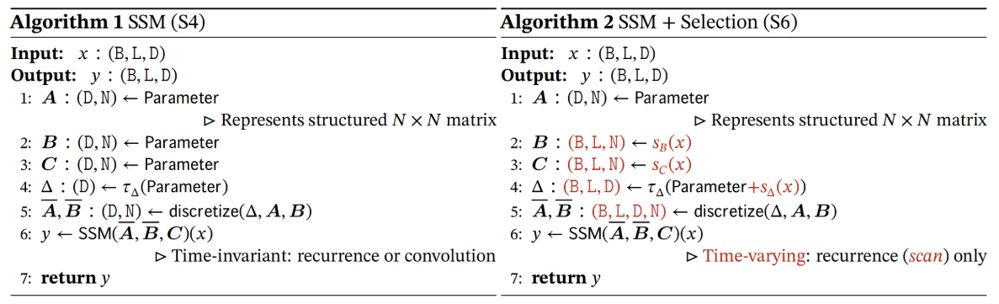
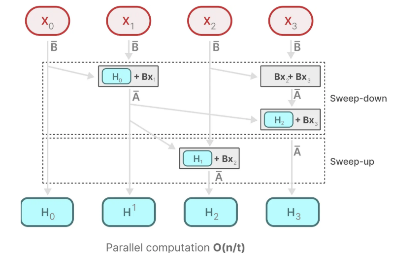
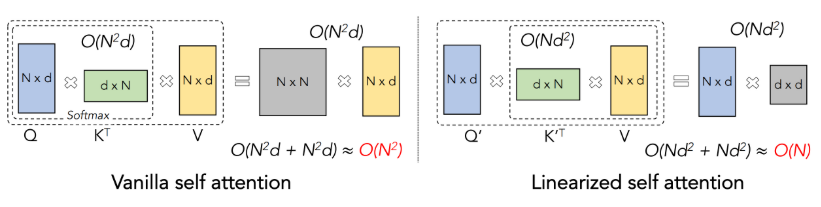
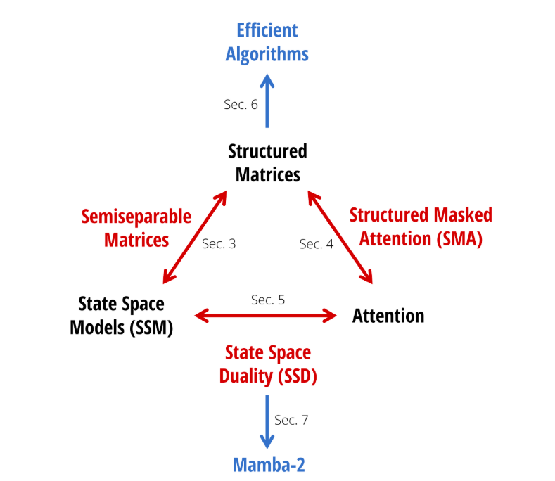
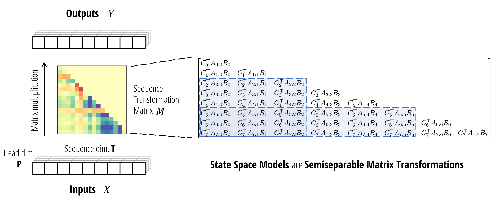
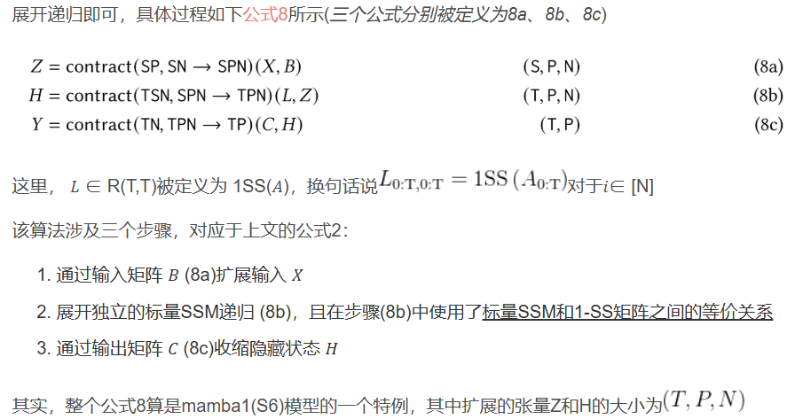
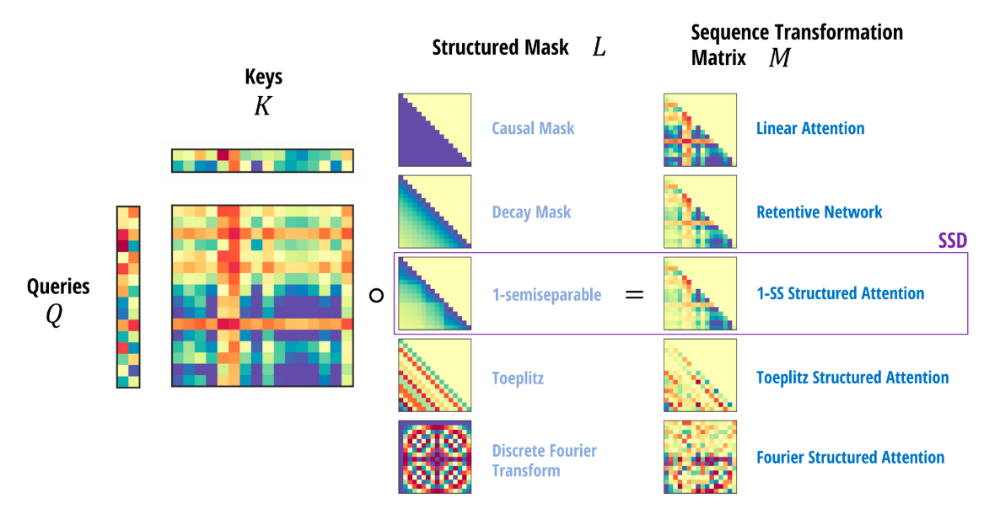
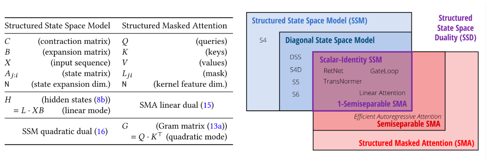
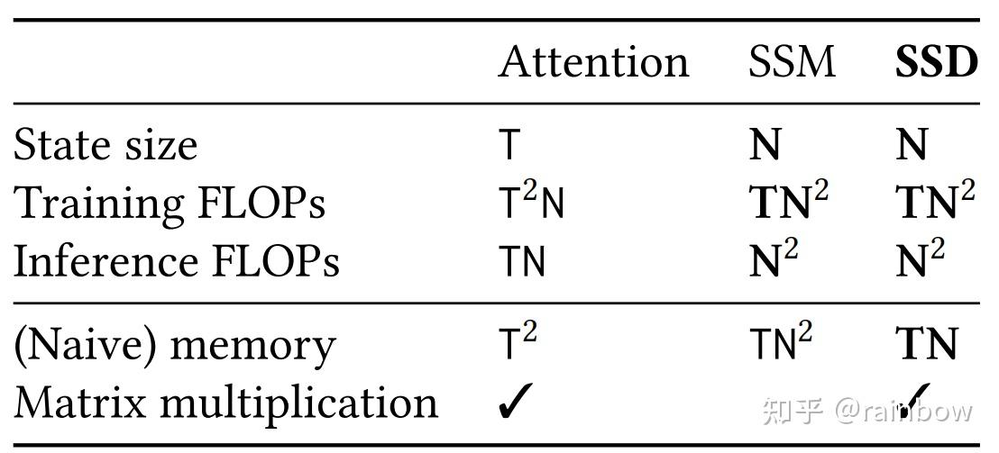
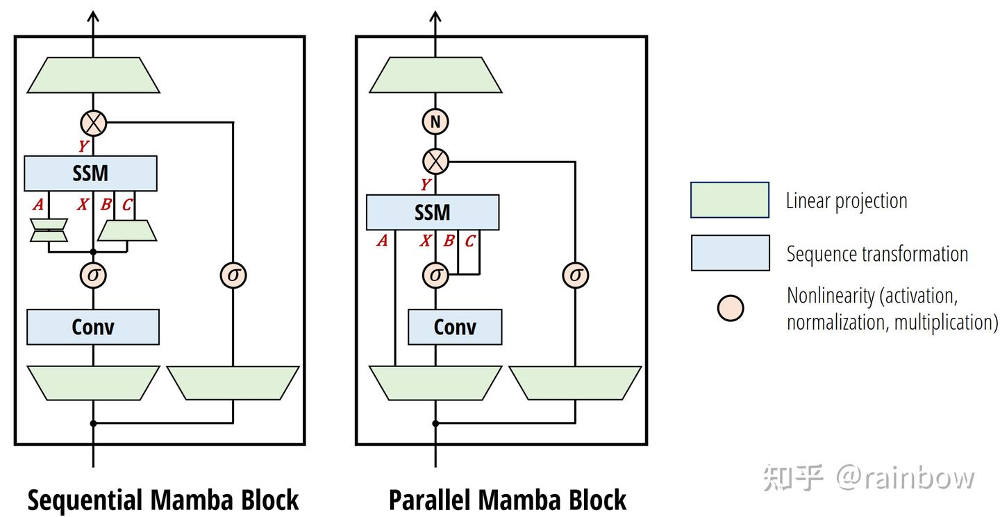

mamba2详解
author: 顾家琛gujiachen21@nudt.edu.cn
核心公式（SSD）
h t = A t h t − 1 + B t x t (1-1) h_t = A_th_{t-1} + B_tx_t \tag{1-1} h t = A t h t − 1 + B t x t ( 1-1 ) y t = C t T y t (1-2) y_t = C_t^Ty_t \tag{1-2} y t = C t T y t ( 1-2 ) T ( T , P ) = S S M ( A T , B ( T , N ) , C ( T , N ) ) ( X ( T , P ) ) T^{(T,P)} = SSM(A^{T},B^{(T,N)},C^{(T,N)})(X^{(T,P)}) T ( T , P ) = SSM ( A T , B ( T , N ) , C ( T , N ) ) ( X ( T , P ) )
SSD的对偶注意力：M = L ∗ C B T M = L * CB^T M = L ∗ C B T
一、背景知识
1. mamba1的问题：没有办法高效的使用矩阵乘法

它只能在递归模式下计算，而不是卷积模式，并且需要“专门的硬件感知实现”才能高效，即如下图所示

即便如此，它仍然不如硬件友好的模型(如 CNN 和 Transformer)高效，因为它没有利用矩阵乘法单元，而现代加速器(如 GPU 和 TPU)正是为此而专门设计的
总之，虽然时间不变SSM 与连续、递归和卷积序列模型密切相关，但它们与注意力机制没有直接关系。所以mamba2想揭示选择性SSM和注意力机制之间的更深层次关系，并利用这一点显著提高SSM的训练速度，同时允许更大的状态规模N。
2. 结构化SSM的序列变换：三个定义
定义2.1：序列变换是指Y = f θ ( X ) Y = f_{\theta}(X) Y = f θ ( X )
其中X , Y ∈ R T , P X,Y \in \mathbb{R}^{T,P} X , Y ∈ R T , P θ \theta θ X t , Y t ∈ R P X_t, Y_t \in \mathbb{R}^P X t , Y t ∈ R P
定义2.2：S S M ( A , B , C ) = S S M ( A 0 : T , B 0 : T , C 0 : T ) SSM(A,B,C) = SSM(A_{0:T},B_{0:T},C_{0:T}) SSM ( A , B , C ) = SSM ( A 0 : T , B 0 : T , C 0 : T )
定义2.3：矩阵变换：指一个序列变换Y = f θ ( X ) Y = f_{\theta}(X) Y = f θ ( X ) Y = M θ X Y = M_{\theta}X Y = M θ X
3. 其他定义
3.1：线性注意力
经典自注意力机制如下。
Y = s o f t m a x ( Q K T ) V Y = softmax(QK^T)V Y = so f t ma x ( Q K T ) V
线性注意力将softmax折叠到核特征映射中，并利用矩阵乘法的结合性将注意力计算的矩阵左乘改为右乘。
( Q K T ) ⋅ V = Q ⋅ ( K T V ) (QK^T)\cdot V = Q\cdot (K^T V) ( Q K T ) ⋅ V = Q ⋅ ( K T V )

线性Transformer是RNN，SSM也是RNN。那么mamba和SSM的联系为：
因果掩码合并为L ∘ Q K T ⋅ V \begin{equation}
L \circ QK^T \cdot V
\end{equation} L ∘ Q K T ⋅ V
，其中L L L
3.2：结构化矩阵定义
结构化矩阵是指:
可以压缩表示，在亚二次（理想情况下是线性）参数中表示；
并且可以通过快速算法，直接操作这这种压缩表示。
3.3：SSD（结构化空间对偶）
应用SSM作为标准计算，SSD有两个不同点：
A简化为标量乘单位矩阵。
使用更大的头维度P，相比于mamba1中P=1，通常使用P = { 64 , 128 } P = \{64, 128\} P = { 64 , 128 }
4. 论文结构

二、SSD的由来
2.1 SSM是结构化矩阵(State Space Models are Structured Matrices)
首先根据定义有h 0 = B 0 x 0 h_0 = B_0x_0 h 0 = B 0 x 0 ∏ i i − 1 = 1 \prod_i^{i-1} = 1 ∏ i i − 1 = 1 h t = A t … A 1 B 0 x 0 + ⋯ + A t B t − 1 x t − 1 + B t x t = ∑ s = 0 t ∏ i = s + 1 t A i B s x s h_t = A_t \dots A_1B_0x_0 + \cdots + A_tB_{t-1}x_{t-1} + B_tx_t \\ = \sum_{s=0}^{t} \prod_{i=s+1}^{t}A_{i} B_sx_s h t = A t … A 1 B 0 x 0 + ⋯ + A t B t − 1 x t − 1 + B t x t = ∑ s = 0 t ∏ i = s + 1 t A i B s x s
然后有y t = ∑ s = 0 t C t T ∏ i = s + 1 t A i B s x s = S S M ( A , B , C ) ( x ) = M x M i j : = C i T ∏ k = j + 1 i A k B j \begin{equation}
\begin{aligned}
y_t &= \sum_{s=0}^{t} C_t^T \prod_{i=s+1}^{t}A_{i} B_sx_s \\
&= SSM(A, B, C)(x) = Mx \\
M_{ij} := C_i^T \prod_{k=j+1}^{i} A_{k} B_j
\end{aligned}
\end{equation} y t M ij := C i T k = j + 1 ∏ i A k B j = s = 0 ∑ t C t T i = s + 1 ∏ t A i B s x s = SSM ( A , B , C ) ( x ) = M x
2.2 半可分矩阵
定义：3.1 若一个（下三角）矩阵 𝑀 的所有位于下三角部分（即对角线及其以下区域）的子矩阵的秩均不超过 N，则称 𝑀 为 N-半可分矩阵（N-semiseparable matrix），其中 N 称为该半可分矩阵的阶或秩
定义：3.2 顺序半可分表示（The Sequentially Semiseparable, SSS），每个N-半可分矩阵都有一个N-SSS表示
一个下三角矩阵M ∈ R T , T M \in R^{T,T} M ∈ R T , T
M i j = C i T ∏ k = j + 1 i A k B j M_{ij} = C_i^T \prod_{k=j+1}^{i} A_{k} B_j M ij = C i T k = j + 1 ∏ i A k B j
定义：3.3 一个 N-SSS 矩阵 𝑀具有上面3.2公式的表示，则便是 N-半可分的
证明如下。
考虑任何非对角块M i : i ′ , j : j ′ M_{i:{i'}, j:j'} M i : i ′ , j : j ′ i ′ > i ≥ j ′ > j {i'}>i\ge j'>j i ′ > i ≥ j ′ > j
\label{[ C i T ∏ k = j + 1 i A k B j ⋯ C i T ∏ k = j ′ + 1 i A k B j ′ ⋮ ⋮ C i ′ T ∏ k = j + 1 i ′ A k B j ⋯ C i ′ T ∏ k = j ′ + 1 i ′ A k B j ′ ] = [ C i T ∏ k = i i A k ⋮ C i ′ T ∏ k = i i ′ A k ] ∏ k = j ′ + 1 i − 1 A k [ ∏ k = j + 1 j ′ A k B j ⋯ B j ′ ] \begin{equation}
\begin{bmatrix}
C_i^T \prod_{k=j+1}^{i} A_{k} B_j&\cdots &C_i^T \prod_{k=j'+1}^{i} A_{k} B_{j'}\\
\vdots&\quad&\vdots\\
C_{i'}^T \prod_{k=j+1}^{i'} A_{k} B_j&\cdots&C_{i'}^T \prod_{k=j'+1}^{i'} A_{k} B_{j'}
\end{bmatrix} =
\begin{bmatrix}
C_i^T \prod_{k=i}^{i} A_{k}\\
\vdots\\
C_{i'}^T \prod_{k=i}^{i'} A_{k}
\end{bmatrix} \prod_{k=j'+1}^{i-1} A_{k}
\begin{bmatrix}
\prod_{k=j+1}^{j'} A_{k}B_j&\cdots&B_{j'}
\end{bmatrix}
\end{equation} C i T ∏ k = j + 1 i A k B j ⋮ C i ′ T ∏ k = j + 1 i ′ A k B j ⋯ ⋯ C i T ∏ k = j ′ + 1 i A k B j ′ ⋮ C i ′ T ∏ k = j ′ + 1 i ′ A k B j ′ = C i T ∏ k = i i A k ⋮ C i ′ T ∏ k = i i ′ A k k = j ′ + 1 ∏ i − 1 A k [ ∏ k = j + 1 j ′ A k B j ⋯ B j ′ ]
1-半可分矩阵(标量SSM递归)
当C j C_j C j B i B_i B i
S S S ( A , B , C ) = d i a g ( A ) ⋅ M d i a g ( B ) SSS(A, B, C) = diag(A) \cdot M diag(B) SSS ( A , B , C ) = d ia g ( A ) ⋅ M d ia g ( B )
定义：3.4 SSM的序列变换
S S M ( A , B , C ) = S S M ( A 0 : T , B 0 : T , C 0 : T ) SSM(A, B, C) = SSM(A_{0:T}, B_{0:T}, C_{0:T}) SSM ( A , B , C ) = SSM ( A 0 : T , B 0 : T , C 0 : T ) X ∈ R T , P → Y ∈ R T , P X\in \mathbb{R}^{T,P} \rightarrow Y \in \mathbb{R}^{T, P} X ∈ R T , P → Y ∈ R T , P

作为序列变换，SSM可以表示为作用于序列维度T上的矩阵变换𝑀∈R(T,T)，在一个头的每个通道中共享相同的矩阵(如上图左侧所示)
这个矩阵是一个半可分矩阵(如上图右侧所示)，它是一个秩结构矩阵，其中包含在对角线及其以下的每个子矩阵(蓝色)的秩最多为N，等于SSM的状态维度。
2.3 通过结构化矩阵乘法计算SSM
半可分矩阵(即秩结构矩阵)是一种经典的结构化矩阵类型：
它们具有压缩表示形式，例如SSS形式只有O(T)参数，而不是O ( T 2 ) O\left(\mathrm{~T}^{2}\right) O ( T 2 )
它们有直接在压缩表示上操作的快速算法
定义；3.5 一个N-SS矩阵秩为T，可以用O(NT)参数表示，并且矩阵向量乘法时空复杂度为O(NT)
例如， 1-SS矩阵有
y t = ∑ i = 0 t c i b i ∏ k = i + 1 t A k x i = ∑ i = 0 t − 1 c i b i ∏ k = i + 1 t A k x i + c t b t x t = a t ∑ i = 0 t − 1 c i b i ∏ k = i + 1 t − 1 A k x i + c t b t x t = a t y t − 1 + c t b t x t \begin{aligned}
y_t &= \sum_{i=0}^{t} c_i b_i \prod_{k=i+1}^{t} A_{k} x_i \\
&= \sum_{i=0}^{t-1} c_i b_i \prod_{k=i+1}^{t} A_{k} x_i + c_tb_tx_t \\
&= a_t\sum_{i=0}^{t-1} c_i b_i \prod_{k=i+1}^{t-1} A_{k} x_i + c_tb_tx_t \\
&= a_t y_{t-1} + c_tb_tx_t
\end{aligned} y t = i = 0 ∑ t c i b i k = i + 1 ∏ t A k x i = i = 0 ∑ t − 1 c i b i k = i + 1 ∏ t A k x i + c t b t x t = a t i = 0 ∑ t − 1 c i b i k = i + 1 ∏ t − 1 A k x i + c t b t x t = a t y t − 1 + c t b t x t
因此计算Y ∈ R T , 1 Y \in \mathbb{R}^{T,1} Y ∈ R T , 1 T ∗ O ( N ) T * O(N) T ∗ O ( N )

2.4 SMA(结构化掩码注意力)：可实例化为任何给定的矩阵结构类别
注意\ref{eq 1}，线性注意力的关键在于L L L
事实上，L L L
定义：3.6 结构化掩码注意力SMA(或简称结构化注意力)被定义为一个函数作用于查询/键/值𝑄, 𝐾, 𝑉以及任何结构化矩阵 𝐿 (即具有低于二次复杂度的矩阵乘法—— sub-quadratic matrix multiplication)，通过四维张量收缩
Y = c o n t r a c t ( T N , S N , S P , T S ∈ T P ) ( Q , K , V , L ) Y = contract(TN, SN, SP, TS \in TP)(Q, K, V, L) Y = co n t r a c t ( TN , SN , SP , TS ∈ TP ) ( Q , K , V , L )
SMA二次模式算法，对应于注意力计算
G = c o n t r a c t ( T N , S N ∈ T S ) ( Q , K ) M = c o n t r a c t ( T S , T S ∈ T S ) ( G , L ) Y = c o n t r a c t ( T S , S P ∈ T P ) ( M , V ) \begin{equation}
\begin{aligned}
G &= contract(TN, SN \in TS)(Q, K) \\
M &= contract(TS, TS \in TS)(G, L) \\
Y &= contract(TS, SP \in TP)(M, V)
\end{aligned}
\end{equation} G M Y = co n t r a c t ( TN , SN ∈ TS ) ( Q , K ) = co n t r a c t ( TS , TS ∈ TS ) ( G , L ) = co n t r a c t ( TS , SP ∈ TP ) ( M , V )
SMA线性模式算法，对应于线性注意力的计算顺序
Z = c o n t r a c t ( S P , S N ∈ S P N ) ( V , K ) H = c o n t r a c t ( T S , S P N ∈ T P N ) ( L , Z ) Y = c o n t r a c t ( T N , T P N ∈ T P ) ( Q , H ) \begin{equation}
\begin{aligned}
Z &= contract(SP, SN \in SPN)(V, K) \\
H &= contract(TS, SPN \in TPN)(L, Z) \\
Y &= contract(TN, TPN \in TP)(Q, H)
\end{aligned}
\end{equation} Z H Y = co n t r a c t ( SP , SN ∈ SPN ) ( V , K ) = co n t r a c t ( TS , SPN ∈ TPN ) ( L , Z ) = co n t r a c t ( TN , TPN ∈ TP ) ( Q , H )
通过改变L L L

三、硬件高效的SSD算法与Mamba2架构
3.1 硬件高效的SSD算法：块分解、对角块、低秩块
定义 6.1：考虑一个具有状态扩展因子N N N P = N P = N P = N X ∈ R ( T , P ) X \in \mathcal{R}^{(T,P)} X ∈ R ( T , P ) O ( T N 2 ) O(TN^2) O ( T N 2 ) O ( T N ) O(TN) O ( TN ) O ( N 2 ) O(N^2) O ( N 2 )

块分解
将矩阵划分为一个T Q × T Q \dfrac{T}{Q} \times \dfrac{T}{Q} Q T × Q T Q × Q Q \times Q Q × Q
有如下划分
[ C 0 T A 0 : 0 B 0 C 1 T A 1 : 0 B 0 C 1 T A 1 : 1 B 1 C 2 T A 2 : 0 B 0 C 2 T A 2 : 1 B 1 C 2 T A 2 : 2 B 2 C 3 T A 3 : 0 B 0 C 3 T A 3 : 1 B 1 C 3 T A 3 : 2 B 2 C 3 T A 3 : 3 B 3 C 4 T A 4 : 0 B 0 C 4 T A 4 : 1 B 1 C 4 T A 4 : 2 B 2 C 4 T A 4 : 3 B 3 C 4 T A 4 : 4 B 4 C 5 T A 5 : 0 B 0 C 5 T A 5 : 1 B 1 C 5 T A 5 : 2 B 2 C 5 T A 5 : 3 B 3 C 5 T A 5 : 4 B 4 C 5 T A 5 : 5 B 5 C 6 T A 6 : 0 B 0 C 6 T A 6 : 1 B 1 C 6 T A 6 : 2 B 2 C 6 T A 6 : 3 B 3 C 6 T A 6 : 4 B 4 C 6 T A 6 : 5 B 5 C 6 T A 6 : 6 B 6 C 7 T A 7 : 0 B 0 C 7 T A 7 : 1 B 1 C 7 T A 7 : 2 B 2 C 7 T A 7 : 3 B 3 C 7 T A 7 : 4 B 4 C 7 T A 7 : 5 B 5 C 7 T A 7 : 6 B 6 C 7 T A 7 : 7 B 7 C 8 T A 8 : 0 B 0 C 8 T A 8 : 1 B 1 C 8 T A 8 : 2 B 2 C 8 T A 8 : 3 B 3 C 8 T A 8 : 4 B 4 C 8 T A 8 : 5 B 5 C 8 T A 8 : 6 B 6 C 8 T A 8 : 7 B 7 C 8 T A 8 : 8 B 8 ] \left[
\begin{array}{ccc|ccc|ccc}
C_0^TA_{0:0}B_0\\
C_1^TA_{1:0}B_0&C_1^TA_{1:1}B_1\\
C_2^TA_{2:0}B_0&C_2^TA_{2:1}B_1&C_2^TA_{2:2}B_2\\
\hline
C_3^TA_{3:0}B_0&C_3^TA_{3:1}B_1&C_3^TA_{3:2}B_2&C_3^TA_{3:3}B_3\\
C_4^TA_{4:0}B_0&C_4^TA_{4:1}B_1&C_4^TA_{4:2}B_2&C_4^TA_{4:3}B_3&C_4^TA_{4:4}B_4\\
C_5^TA_{5:0}B_0&C_5^TA_{5:1}B_1&C_5^TA_{5:2}B_2&C_5^TA_{5:3}B_3&C_5^TA_{5:4}B_4&C_5^TA_{5:5}B_5\\
\hline
C_6^TA_{6:0}B_0&C_6^TA_{6:1}B_1&C_6^TA_{6:2}B_2&C_6^TA_{6:3}B_3&C_6^TA_{6:4}B_4&C_6^TA_{6:5}B_5&C_6^TA_{6:6}B_6\\
C_7^TA_{7:0}B_0&C_7^TA_{7:1}B_1&C_7^TA_{7:2}B_2&C_7^TA_{7:3}B_3&C_7^TA_{7:4}B_4&C_7^TA_{7:5}B_5&C_7^TA_{7:6}B_6&C_7^TA_{7:7}B_7\\
C_8^TA_{8:0}B_0&C_8^TA_{8:1}B_1&C_8^TA_{8:2}B_2&C_8^TA_{8:3}B_3&C_8^TA_{8:4}B_4&C_8^TA_{8:5}B_5&C_8^TA_{8:6}B_6&C_8^TA_{8:7}B_7&C_8^TA_{8:8}B_8
\end{array}
\right] C 0 T A 0 : 0 B 0 C 1 T A 1 : 0 B 0 C 2 T A 2 : 0 B 0 C 3 T A 3 : 0 B 0 C 4 T A 4 : 0 B 0 C 5 T A 5 : 0 B 0 C 6 T A 6 : 0 B 0 C 7 T A 7 : 0 B 0 C 8 T A 8 : 0 B 0 C 1 T A 1 : 1 B 1 C 2 T A 2 : 1 B 1 C 3 T A 3 : 1 B 1 C 4 T A 4 : 1 B 1 C 5 T A 5 : 1 B 1 C 6 T A 6 : 1 B 1 C 7 T A 7 : 1 B 1 C 8 T A 8 : 1 B 1 C 2 T A 2 : 2 B 2 C 3 T A 3 : 2 B 2 C 4 T A 4 : 2 B 2 C 5 T A 5 : 2 B 2 C 6 T A 6 : 2 B 2 C 7 T A 7 : 2 B 2 C 8 T A 8 : 2 B 2 C 3 T A 3 : 3 B 3 C 4 T A 4 : 3 B 3 C 5 T A 5 : 3 B 3 C 6 T A 6 : 3 B 3 C 7 T A 7 : 3 B 3 C 8 T A 8 : 3 B 3 C 4 T A 4 : 4 B 4 C 5 T A 5 : 4 B 4 C 6 T A 6 : 4 B 4 C 7 T A 7 : 4 B 4 C 8 T A 8 : 4 B 4 C 5 T A 5 : 5 B 5 C 6 T A 6 : 5 B 5 C 7 T A 7 : 5 B 5 C 8 T A 8 : 5 B 5 C 6 T A 6 : 6 B 6 C 7 T A 7 : 6 B 6 C 8 T A 8 : 6 B 6 C 7 T A 7 : 7 B 7 C 8 T A 8 : 7 B 7 C 8 T A 8 : 8 B 8
定义A 0 : 0 = 1 , A i : j = ∏ k = j + 1 i A k A_{0:0} = 1, A_{i:j} = \prod_{k=j+1}^{i} A_k A 0 : 0 = 1 , A i : j = ∏ k = j + 1 i A k
进而有
\label{[ C 0 T A 0 : 0 B 0 C 1 T A 1 : 0 B 0 C 1 T A 1 : 1 B 1 C 2 T A 2 : 0 B 0 C 2 T A 2 : 1 B 1 C 2 T A 2 : 2 B 2 [ C 3 T A 3 : 2 C 4 T A 4 : 2 C 5 T A 5 : 2 ] A 2 : 2 [ B 0 T A 2 : 0 B 1 T A 2 : 1 B 2 T A 2 : 2 ] T C 3 T A 3 : 3 B 3 C 4 T A 4 : 3 B 3 C 4 T A 4 : 4 B 4 C 5 T A 5 : 3 B 3 C 5 T A 5 : 4 B 4 C 5 T A 5 : 5 B 5 [ C 6 T A 6 : 5 C 7 T A 7 : 5 C 8 T A 8 : 5 ] A 5 : 2 [ B 0 T A 2 : 0 B 1 T A 2 : 1 B 2 T A 2 : 2 ] T [ C 6 T A 6 : 5 C 7 T A 7 : 5 C 8 T A 8 : 5 ] A 5 : 5 [ B 3 T A 5 : 3 B 4 T A 5 : 4 B 5 T A 5 : 5 ] T C 6 T A 6 : 6 B 6 C 7 T A 7 : 6 B 6 C 7 T A 7 : 7 B 7 C 8 T A 8 : 6 B 6 C 8 T A 8 : 7 B 7 C 8 T A 8 : 8 B 8 ] (4) \left[
\begin{array}{c|c|c}
\begin{array}{ccc}
C_0^TA_{0:0}B_0\\
C_1^TA_{1:0}B_0&C_1^TA_{1:1}B_1\\
C_2^TA_{2:0}B_0&C_2^TA_{2:1}B_1&C_2^TA_{2:2}B_2
\end{array}
\\
\hline
\colorbox{#CCFFCC}{\boxed{{
\begin{array}{ccc}
\begin{bmatrix}
C_3^TA_{3:2}\\
C_4^TA_{4:2}\\
C_5^TA_{5:2}
\end{bmatrix}
&A_{2:2}&
\begin{bmatrix}
B_0^TA_{2:0}\\
B_1^TA_{2:1}\\
B_2^TA_{2:2}
\end{bmatrix}^T
\end{array}
}}}
&
\begin{array}{ccc}
C_3^TA_{3:3}B_3\\
C_4^TA_{4:3}B_3&C_4^TA_{4:4}B_4\\
C_5^TA_{5:3}B_3&C_5^TA_{5:4}B_4&C_5^TA_{5:5}B_5
\end{array}
\\
\hline
\colorbox{#CCDCF7}{\boxed{{
\begin{array}{ccc}
\begin{bmatrix}
C_6^TA_{6:5}\\
C_7^TA_{7:5}\\
C_8^TA_{8:5}
\end{bmatrix}
&A_{5:2}&
\begin{bmatrix}
B_0^TA_{2:0}\\
B_1^TA_{2:1}\\
B_2^TA_{2:2}
\end{bmatrix}^T
\end{array}
}}}
&
\colorbox{#CCFFCC}{\boxed{{
\begin{array}{ccc}
\begin{bmatrix}
C_6^TA_{6:5}\\
C_7^TA_{7:5}\\
C_8^TA_{8:5}
\end{bmatrix}
&A_{5:5}&
\begin{bmatrix}
B_3^TA_{5:3}\\
B_4^TA_{5:4}\\
B_5^TA_{5:5}
\end{bmatrix}^T
\end{array}
}}}
&
\begin{array}{ccc}
C_6^TA_{6:6}B_6\\
C_7^TA_{7:6}B_6&C_7^TA_{7:7}B_7\\
C_8^TA_{8:6}B_6&C_8^TA_{8:7}B_7&C_8^TA_{8:8}B_8
\end{array}
\end{array}
\right] \tag{4} C 0 T A 0 : 0 B 0 C 1 T A 1 : 0 B 0 C 2 T A 2 : 0 B 0 C 1 T A 1 : 1 B 1 C 2 T A 2 : 1 B 1 C 2 T A 2 : 2 B 2 C 3 T A 3 : 2 C 4 T A 4 : 2 C 5 T A 5 : 2 A 2 : 2 B 0 T A 2 : 0 B 1 T A 2 : 1 B 2 T A 2 : 2 T C 6 T A 6 : 5 C 7 T A 7 : 5 C 8 T A 8 : 5 A 5 : 2 B 0 T A 2 : 0 B 1 T A 2 : 1 B 2 T A 2 : 2 T C 3 T A 3 : 3 B 3 C 4 T A 4 : 3 B 3 C 5 T A 5 : 3 B 3 C 4 T A 4 : 4 B 4 C 5 T A 5 : 4 B 4 C 5 T A 5 : 5 B 5 C 6 T A 6 : 5 C 7 T A 7 : 5 C 8 T A 8 : 5 A 5 : 5 B 3 T A 5 : 3 B 4 T A 5 : 4 B 5 T A 5 : 5 T C 6 T A 6 : 6 B 6 C 7 T A 7 : 6 B 6 C 8 T A 8 : 6 B 6 C 7 T A 7 : 7 B 7 C 8 T A 8 : 7 B 7 C 8 T A 8 : 8 B 8 ( 4 )
下面是朴素实现。
def segsum ( x) :
"""朴素的段和计算。exp(segsum(A)) 生成一个 1-SS 矩阵，等价于一个标量 SSM """
T = x. size( - 1 )
x_cumsum = torch. cumsum( x, dim= - 1 )
x_segsum = x_cumsum[ . . . , : , None ] - x_cumsum[ . . . , None , : ]
mask = torch. tril( torch. ones( T, T, device= x. device, dtype= bool ) , diagonal= 0 )
x_segsum = x_segsum. masked_fill( ~ mask, - torch. inf)
return x_segsum
def ssd ( X, A, B, C, block_len= 64 , initial_states= None ) :
"""
Arguments:
X: (batch, length, n_heads, d_head)
A: (batch, length, n_heads)
B: (batch, length, n_heads, d_state)
C: (batch, length, n_heads, d_state)
Return:
Y: (batch, length, n_heads, d_head)
"""
assert X. dtype == A. dtype == B. dtype == C. dtype
assert X. shape[ 1 ] % block_len == 0
X, A, B, C = [ rearrange( x, "b (c l) ... -> b c l ..." , l= block_len) for x in ( X, A, B, C) ]
A = rearrange( A, "b c l h -> b h c l" )
A_cumsum = torch. cumsum( A, dim= - 1 )
3.1.1 segsum计算1-SS矩阵
1-SS中每个元素是累乘的，但是数字可能会极小，因此采用segsum操作。log \log log exp \exp exp
初始操作中累加和处理为：
x_cumsum = torch. cumsum( x, dim= - 1 )
x_segsum = x_cumsum[ . . . , : , None ] - x_cumsum[ . . . , None , : ]
由于SSM对数值十分敏感，这个操作需要做减法操作，这就会引入Catastrophic_cancellation 问题，简单来说，两个大的数值十分接近，相对差值很小；但是他们减去同一个数后，变成小的数值了，相对差值就变大了。
所以改进成了无减法的版本：
x = repeat( x, "... d -> ... d e" , e= T)
mask = torch. tril( torch. ones( T, T, device= x. device, dtype= bool ) , diagonal= - 1 )
x = x. masked_fill( ~ mask, 0 )
x_segsum = torch. cumsum( x, dim= - 2 )
根据作者的介绍，这个细节非常重要，如果是unstable版本的实现，可能用fp32训练刚开始没多久就出现了nan。
3.1.2 计算对角块
采用与Y = ( L ∘ C B T ) X Y = (L \circ CB^T )X Y = ( L ∘ C B T ) X
L = torch. exp( segsum( A) )
Y_diag = torch. einsum( "bclhn,bcshn,bhcls,bcshp->bclhp" , C, B, L, X)
3.1.3 低秩分解计算
如公式 \ref{eq 4}，具体而言即是计算
[ C 6 T A 6 : 5 C 7 T A 7 : 5 C 8 T A 8 : 5 ] A 5 : 2 [ B 0 T A 2 : 0 B 1 T A 2 : 1 B 2 T A 2 : 2 ] T \colorbox{#CCDCF7}{\boxed{{
\begin{array}{ccc}
\begin{bmatrix}
C_6^TA_{6:5}\\
C_7^TA_{7:5}\\
C_8^TA_{8:5}
\end{bmatrix}
&A_{5:2}&
\begin{bmatrix}
B_0^TA_{2:0}\\
B_1^TA_{2:1}\\
B_2^TA_{2:2}
\end{bmatrix}^T
\end{array}
}}} C 6 T A 6 : 5 C 7 T A 7 : 5 C 8 T A 8 : 5 A 5 : 2 B 0 T A 2 : 0 B 1 T A 2 : 1 B 2 T A 2 : 2 T
计算右因子
decay_states = torch. exp( ( A_cumsum[ : , : , : , - 1 : ] - A_cumsum) )
states = torch. einsum( "bclhn,bhcl,bclhp->bchpn" , B, decay_states, X)
其中A _ c m s u m A\_cmsum A _ c m s u m
计算中心因子
if initial_states is None :
initial_states = torch. zeros_like( states[ : , : 1 ] )
states = torch. cat( [ initial_states, states] , dim= 1 )
decay_chunk = torch. exp( segsum( F. pad( A_cumsum[ : , : , : , - 1 ] , ( 1 , 0 ) ) ) )
new_states = torch. einsum( "bhzc,bchpn->bzhpn" , decay_chunk, states)
states, final_state = new_states[ : , : - 1 ] , new_states[ : , - 1 ]
计算左因子
state_decay_out = torch. exp( A_cumsum)
Y_off = torch. einsum( 'bclhn,bchpn,bhcl->bclhp' , C, states, state_decay_out)
综合所有计算结果
Y = rearrange( Y_diag+ Y_off, "b c l h p -> b (c l) h p" )
3.2 计算复杂度分析
将符号B M M ( B , M , N , K ) BMM(B, M, N, K) BMM ( B , M , N , K ) c o n t r a c t ( M K , K N → M N ) contract(MK, KN → MN) co n t r a c t ( M K , K N → MN )
计算成本：总共O ( B M N K ) F L O P s O(BMNK)\quad FLOPs O ( BMN K ) F L OP s
内存成本：总共O ( B ( M K + K N + M N ) ) O(B(MK+KN+MN)) O ( B ( M K + K N + MN ))
并行化：较大的M 、 N 、 K M、N、K M 、 N 、 K
3.2.1 中心块
计算核矩阵 C T B C^TB C T B B M M ( T / Q , Q , Q , N ) BMM(T/Q, Q, Q, N) BMM ( T / Q , Q , Q , N ) ( T / Q , Q , Q ) (T/Q, Q, Q) ( T / Q , Q , Q ) B M M ( T / Q , Q , P , N ) BMM(T/Q, Q, P, N) BMM ( T / Q , Q , P , N )
3.2.2 低秩块：右因子
这一步是一次矩阵乘法，成本为B M M ( T / Q , N , P , Q ) BMM(T/Q, N, P, Q) BMM ( T / Q , N , P , Q )
3.2.3 低秩块：中心因子
这一步是一个标量 SSM 扫描（或 1-SS 乘法），长度为 T/Q，独立通道为 (N, P)。这个扫描的工作量为 TNP/Q，与其他因素相比可以忽略不计。
需要注意的是，由于分块将序列长度从 T 减小到 T/Q，这个扫描的成本比纯 SSM 扫描（例如 Mamba 的选择扫描）小了 Q 倍。因此我们可以观察到，在大多数问题长度上，其他算法可能更有效，或者更容易实现而不会显著减慢速度。例如，通过 1-SS 矩阵乘法的朴素实现成本为 BMM(1, T/Q, NP, T/Q)，这比朴素的递归/扫描实现更容易，并且可能比其更有效。
3.2.4 低秩块：左因子
这一步是一次矩阵乘法，成本为 BMM(T/Q, Q, P, N)。
3.2.5 总成本
如果我们设置 N=P=Q（换句话说，状态维度、头维度和块长度相等），那么上述所有 BMM 项都变成了 BMM(T/N, N, N, N)。其计算特性是：
总 FLOP 数量为 O ( T N 2 ) O(TN^2) O ( T N 2 ) O ( T N ) O(TN) O ( TN )
与Attention和mamba1相比

3.3 mamba2 架构

Mamba-1 受 SSM 为中心的观点启发，其中选择性 SSM 层被视为从 X → Y X \rightarrow Y X → Y A A A B B B C C C X X X ( A , B , C ) (A, B, C) ( A , B , C ) X X X ( A , B , C ) (A, B, C) ( A , B , C )
在 Mamba-2 中，SSD 层被视为从 A A A X X X B B B C → Y C \rightarrow Y C → Y A A A X X X B B B C C C X X X B B B C C C Q Q Q K K K V V V
带来的好处：采用并行投影以获得 SSM 的 A A A B B B C C C X X X
SSM参数𝐴, 𝐵, 𝐶在模块开始时生成，而不是作为SSM输入𝑋 的函数
the SSM parameters 𝐴, 𝐵, 𝐶 are produced at the beginning of the block instead of as a function of the SSM input 𝑋 .
添加了一个额外的归一化层，如NormFormer，提高了稳定性
An additional normalization layer is added as in NormFormer(Shleifer, Weston, and Ott 2021), improving stability.
𝐵和𝐶投影只有一个头部，在𝑋头部之间共享，类似于多值注意力（MVA）
The 𝐵 and 𝐶 projections only have a single head shared across the 𝑋 heads, analogous to multi-value attention (MVA)
3.4 额外的归一化
在初步实验中，发现较大模型中容易出现不稳定性
通过在最终输出投影之前的块中添加一个额外的归一化层(例如LayerNorm、GroupNorm或RMSNorm)来缓解这一问题。 这种归一化的使用与NormFormer架构最直接相关，该架构也在MLP和MHA块的末端添加了归一化层。